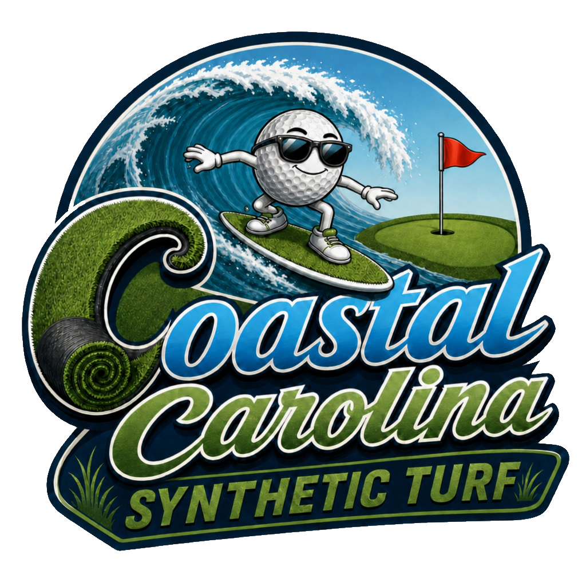

Brunswick County · Coastal Property Owners
Synthetic turf isn't cheap. Neither is fighting the Carolina coast every season. Here's the math that changes the conversation.
The Real Cost of Natural Grass
The average Brunswick County homeowner with 1,000 sq ft of lawn spends $1,150 to $2,400 every year on mowing, fertilizer, water, pesticides, and equipment — just to keep natural grass alive. Coastal and near-water properties consistently run toward the higher end of that range. Over 15 years, including initial installation, that adds up to $18,750–$39,200 spent on a lawn that still dies, floods, and burns.
Synthetic turf requires an upfront investment. After that, your recurring lawn costs drop to nearly zero. One payment. Done.
Based on a 1,000 sq ft coastal lawn. Natural grass costs sourced from Wilmington/Brunswick County market rates via Angi, LawnBySeasons, and Brunswick County Public Utilities (FY 24-25). Synthetic turf install reflects 2026 industry averages per LawnStarter and HomeGuide. Storm & salt damage reflect NC coastal averages per Sod Solutions and Clemson Extension.
The Brunswick County Problem
Within a mile or two of the Atlantic or Intracoastal, salt air isn't an occasional visitor — it's a permanent resident. It coats grass blades, disrupts nutrient uptake, and burns patches after every nor'easter. Synthetic turf doesn't absorb salt. Salt spray rinses off. Period.
Dorian. Florence. Isaias. Idalia. If you've lived here long enough, those aren't just news stories — they're chapters in your property's history. Hurricane Florence alone produced 18 feet of storm surge near Calabash and Holden Beach. Natural sod doesn't survive that. Synthetic turf does.
Brunswick County storm surveys found that 35% of residents reported yard washout and flooding damage. Poor drainage leaves sod smothered, eroded, and compacted. Synthetic turf is engineered to drain fast, dry faster, and stay exactly where it was installed.
Replant. Reseed. Call the landscaper. Write the check. Cross your fingers heading into next storm season. Natural grass on the Carolina coast isn't a lawn — it's a subscription. And every year, the coast wins.
What You're Actually Getting
Natural grass demands constant irrigation — thousands of gallons every growing season. Synthetic turf uses zero. That's a water bill line item that disappears permanently.
No mowing. No fertilizing. No aerating. No overseeding. No irrigation scheduling. An occasional rinse and brush is all it takes.
No root systems to disrupt. No blades to burn. Salt spray rinses clean. Your lawn looks the same the morning after a nor'easter as it did the day before.
Engineered to stay put. No erosion, no washout, no post-storm replanting. When the storm passes, your lawn is already done recovering.
Looks immaculate on day one, year five, and year fifteen. No brown patches, no dead zones, no seasonal variation. Your property makes the right impression every single day.
Built to outlast the problem. UV-stabilized for intense coastal sun. Backed by a warranty that means something, installed by people who know this coastline.
The ROI Reframe
For the typical coastal homeowner spending $2,000 or more per year on lawn care, synthetic turf pays for itself around year 6. After that, every year is money back in your pocket — not your landscaper's. The upfront cost isn't an expense. It's the moment you stop paying forever.
Natural grass isn't cheaper. It just spreads the cost out far enough that you stop noticing you're paying it. Synthetic turf makes the math visible — and once you see it, it's hard to unsee.
Who This Is For
Tired of the seasonal cycle. Ready for a lawn that looks right without the recurring cost and effort.
Your property needs to look great between visits — without relying on lawn service calls you can't supervise from home.
Curb appeal drives first impressions. A flawless lawn 365 days a year, with maintenance costs removed from the budget entirely.
Consistent appearance across common areas, without the ongoing landscape contracts and storm-damage remediation bills.
If salt air is in the address, natural grass is fighting a losing battle. Synthetic turf is built for exactly this exposure.
From backyard practice greens to full commercial installations — consistent surface, zero irrigation, playable year-round.
No pressure. No pitch. Just an honest conversation about what synthetic turf would actually cost — and what it would save — on your specific property.
Let's Talk